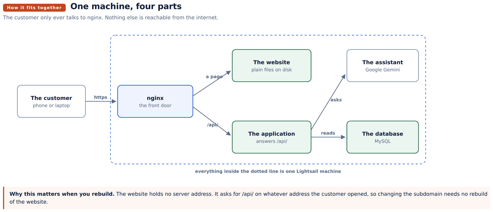
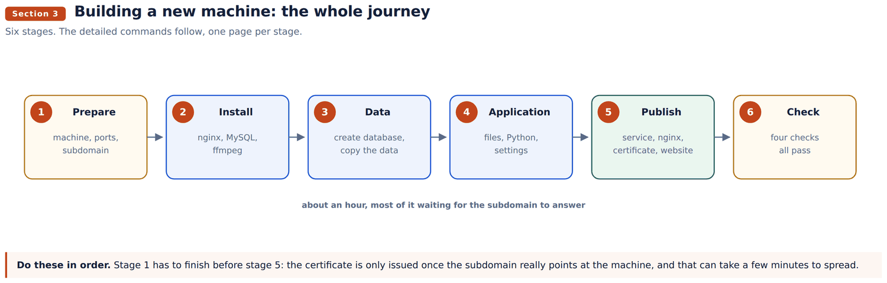
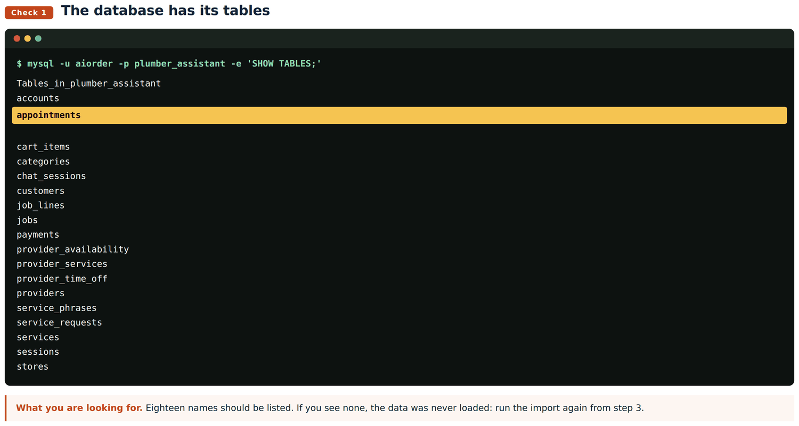
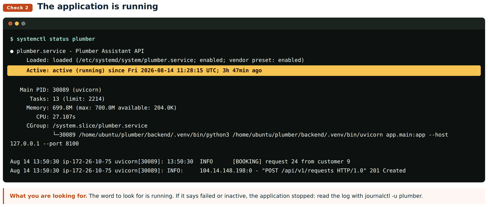
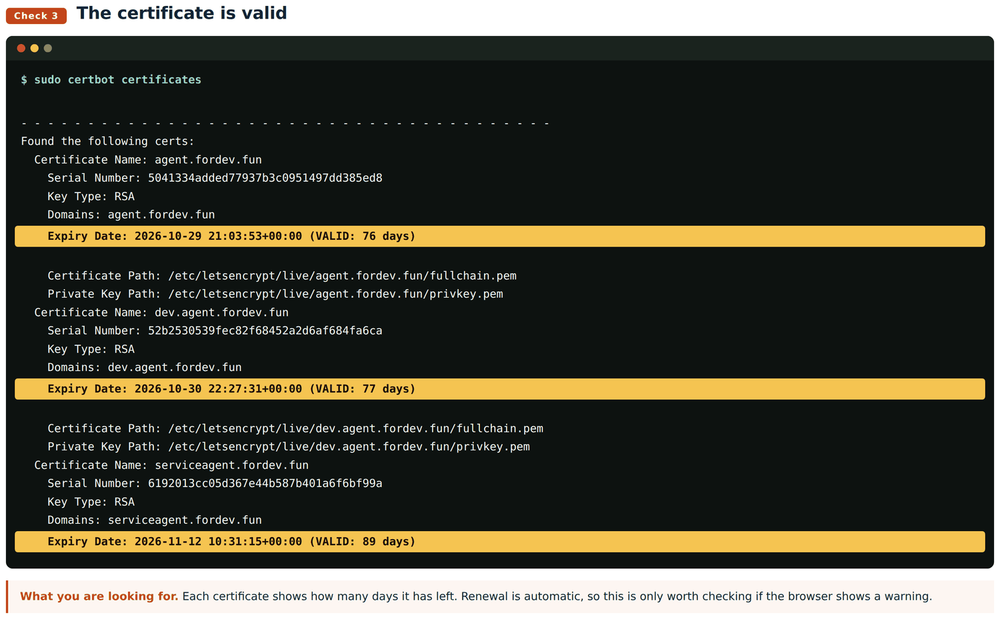
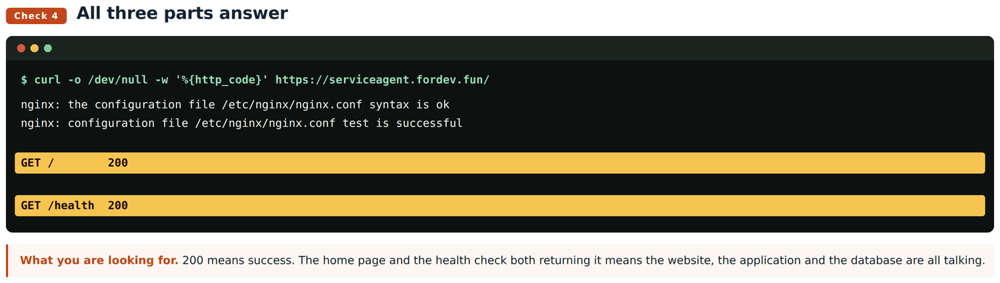
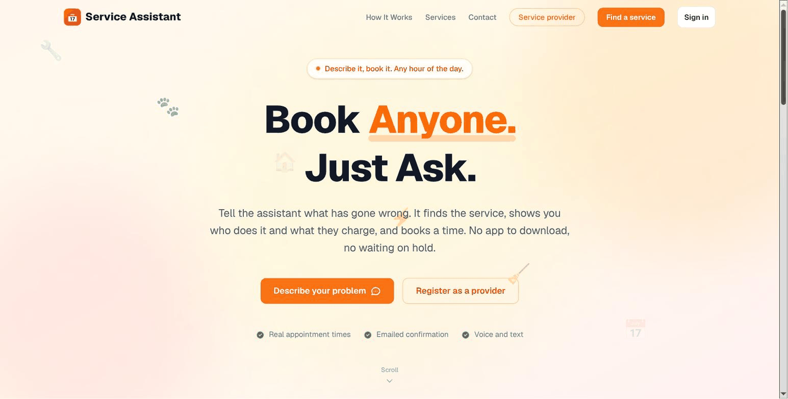
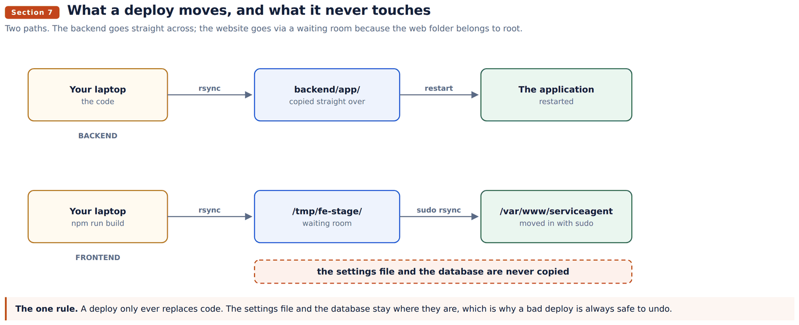
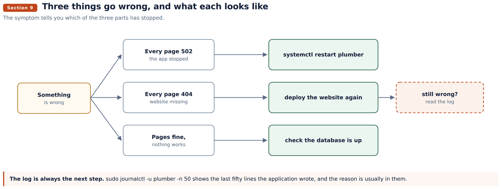

Handover document
Service Agent: application spin-off and plumbing handover
How the booking platform was built from the shop, what changed between them, and the procedure for standing either one up on a new machine.
Abad Naseer · 14 August 2026 · every command run against the live server
Two applications share one codebase. The Product Application is a grocery shop. The Plumbing Application, Service Agent, is a booking platform. The second was built from the first.
This document shows how to run either one, and how to build a third the same way. Every command was run against the live servers.
Wherever a command appears, the line under it says what you should see when it worked. If you see something else, that is where to stop and look.
Product: https://dev.agent.fordev.fun Plumbing: https://serviceagent.fordev.fun

Four parts, one machine.
| Part | Its job |
|---|---|
| nginx | The front door. The only part open to the internet. |
| The website | Plain files. No program running. |
| The application | Answers anything under /api/. Talks to the database. |
| The database | MySQL, on the same machine. |
| Product | Plumbing | |
|---|---|---|
| Machine | 54.255.130.57 | 52.25.174.57 |
| Address | dev.agent.fordev.fun | serviceagent.fordev.fun |
| Application port | 8000 | 8100 |
| Service name | aiorder | plumber |
| Website folder | /var/www/ai-order/frontend-dist | /var/www/serviceagent |
| Application folder | /var/www/ai-order/backend | /home/ubuntu/plumber/backend |
| Database | aidata2prd_dev | plumber_assistant |
The two application folders are in different places. Worth knowing before going looking for one.

Six stages, in order. Allow about an hour.
Create the machine. Lightsail console, Create instance, Linux, Ubuntu 22.04 LTS, the 2 GB plan or larger. Then attach a static IP, or the address changes on restart and the subdomain stops working.
Let your key be used. A key file that anyone can read is refused by SSH.
chmod 600 ~/Downloads/your-key.pem
ssh -i ~/Downloads/your-key.pem ubuntu@NEW.IP.ADDRESSYou should see: a prompt ending in ubuntu@ip-...:~$. You are on the machine.
Open the two doors. Lightsail blocks everything except SSH until you say otherwise. Under Networking, add HTTP on TCP 80 and HTTPS on TCP 443.
Leave 3306 closed. That is the database, and it only ever talks to the application sitting beside it on the same machine.
Point the subdomain. In the DNS for fordev.fun, add an A record: name is the subdomain, value is the new static IP.
dig +short yoursubdomain.fordev.funYou should see: the new IP address. Nothing, or the old address, means it has not spread yet. Wait. Stage 5 will fail without this.
sudo apt update
sudo apt install -y nginx mysql-server ffmpeg git curl
curl -LsSf https://astral.sh/uv/install.sh | shYou should see: a long list of packages, ending without the word Error.
ffmpeg is not optional. It converts the audio from voice bookings.
Make an empty database and a user for it.
sudo mysql -e "CREATE DATABASE plumber_assistant CHARACTER SET utf8mb4;"
sudo mysql -e "CREATE USER 'aiorder'@'localhost' IDENTIFIED BY 'A_STRONG_PASSWORD';"
sudo mysql -e "GRANT ALL ON plumber_assistant.* TO 'aiorder'@'localhost';"
sudo mysql -e "FLUSH PRIVILEGES;"'aiorder'@'localhost' means "only from this machine". Writing 'aiorder'@'%' instead means "from anywhere on the internet". Section 10.1 is what happens when you get that wrong.
Copy the data over. On the old machine:
mysqldump -h 127.0.0.1 -u aiorder -p plumber_assistant > plumber.sqlOn the new one:
mysql -h 127.0.0.1 -u aiorder -p plumber_assistant < plumber.sql
Bring the code.
git clone git@github.com:jafgithub/ai-service-chat-se-abad.git ~/plumberGive it its own Python.
cd ~/plumber/backend
uv venv .venv --python 3.12
uv pip install --python .venv/bin/python -r requirements.txtThis environment has no pip inside it. Always uv pip install --python .venv/bin/python. Typing .venv/bin/pip gives "no such file", and that is expected, not a fault.
Write the settings.
nano ~/plumber/backend/.env
chmod 600 ~/plumber/backend/.envCopy the old file, then change these and only these:
| Setting | Why |
|---|---|
DB_PASSWORD | The password you chose in stage 3 |
ADMIN_TOKEN | Opens the admin screens. Invent a new one. |
SMTP_FROM, AI_ORDER_EMAIL | Who emails come from, and who is copied |
The four STRIPE_ | Card payments |
The four PAYPAL_ | PayPal |
Everything else carries over untouched.
Apply the database changes.
for m in migrations/00*.py; do .venv/bin/python "$m"; doneYou should see: four short reports. Running this twice is safe, each one checks before it changes anything.
Teach the machine to start the application.
sudo nano /etc/systemd/system/plumber.service[Unit]
Description=Service Assistant API
After=network-online.target mysql.service
Wants=network-online.target
[Service]
Type=simple
User=ubuntu
WorkingDirectory=/home/ubuntu/plumber/backend
EnvironmentFile=/home/ubuntu/plumber/backend/.env
ExecStart=/home/ubuntu/plumber/backend/.venv/bin/uvicorn app.main:app --host 127.0.0.1 --port 8100
MemoryMax=700M
Restart=always
RestartSec=3
[Install]
WantedBy=multi-user.targetsudo systemctl daemon-reload
sudo systemctl enable --now plumber
Set up the front door.
sudo nano /etc/nginx/sites-available/serviceagentserver {
listen 80;
server_name yoursubdomain.fordev.fun;
client_max_body_size 20M;
root /var/www/serviceagent;
index index.html;
location /api/ {
proxy_pass http://127.0.0.1:8100;
proxy_set_header Host $host;
proxy_set_header X-Forwarded-For $remote_addr;
proxy_set_header X-Forwarded-Proto $scheme;
proxy_read_timeout 180s;
}
location = /health { proxy_pass http://127.0.0.1:8100/health; }
location /_next/static/ { add_header Cache-Control "public, max-age=31536000, immutable"; try_files $uri =404; }
location / { try_files $uri $uri.html $uri/index.html /index.html; add_header Cache-Control "no-store, must-revalidate"; }
}sudo mkdir -p /var/www/serviceagent
sudo ln -sf /etc/nginx/sites-available/serviceagent /etc/nginx/sites-enabled/
sudo nginx -t && sudo systemctl reload nginxYou should see: syntax is ok and test is successful. nginx refuses to reload a file it cannot understand, so this is safe to run any time.
proxy_read_timeout 180s is there for a reason: voice bookings run longer than the minute nginx allows by default, and without it they stop halfway.
Get the padlock.
sudo apt install -y certbot python3-certbot-nginx
sudo certbot --nginx -d yoursubdomain.fordev.fun --agree-tos -m you@example.com --redirectYou should see: "Congratulations". Certbot edits the nginx file itself and sets up automatic renewal. If it fails, the subdomain is not pointing here yet: go back to stage 1.

One certificate for every subdomain instead. Possible, but it cannot be checked through a web page, so you must add a DNS record by hand:
sudo certbot certonly --manual --preferred-challenges dns \
-d "*.fordev.fun" -d fordev.fun --agree-tos -m you@example.comCertbot prints a _acme-challenge record. Add it in the DNS, confirm it answers with dig +short TXT _acme-challenge.fordev.fun, then press enter.
The catch: a certificate made this way does not renew on its own. It has to be redone every 90 days. For one or two subdomains the simple command above is less work and less risk.
Put the website on. Built on your own computer, because the server has no Node installed.
cd frontend
npm install
npm run build:serviceagent
rsync -az --delete out/ ubuntu@NEW.IP:/tmp/fe-stage/
ssh ubuntu@NEW.IP 'sudo rsync -a --delete /tmp/fe-stage/ /var/www/serviceagent/ \
&& sudo chown -R www-data:www-data /var/www/serviceagent/'Use build:serviceagent, not build. The plain build is made for the old address where the app sat inside a folder, and its pages look in the wrong place on a subdomain.
curl -s -o /dev/null -w "home %{http_code}\n" https://yoursubdomain.fordev.fun/
curl -s -o /dev/null -w "health %{http_code}\n" https://yoursubdomain.fordev.fun/health
curl -s https://yoursubdomain.fordev.fun/api/v1/services | head -c 200
Two 200s and a list of services means the website, the application and the database are all talking to each other. You are done.

A conversational grocery shop. A shopper types or speaks, the assistant searches 25,631 products, results fill a basket. When the catalogue has nothing, a paid search looks at other shops.
Search never touches the database. The whole catalogue sits in memory, which is why a search answers in about 200 milliseconds.
Its own settings: the shopping group (SERPAPI_KEY, SHOPPING_PROVIDER, STORE_COMPARISON_TTL_DAYS and four more) and six BROWSE_ settings for an in-app retailer browser that was built and then switched off.
Its database: 26 working tables. items for the catalogue, orders and order_details for trade, external_offers for what outside search found.
Same shape, different transaction. A customer describes a problem, the assistant matches a service, shows who does it and what they charge, offers real times from each provider's diary, and books one.
18 tables. Four migrations built the new ones:
| Migration | Adds |
|---|---|
001_providers_and_accounts | providers, their services, their hours, accounts, sessions |
002_provider_time_off | holidays and closures |
003_service_requests | the request that exists before a job does |
004_booking_payments | payment status on a job |
items became services, gaining duration_minutes and emergency. orders became jobs. appointments is new.
Its own settings: seven BOOKING_ (working day 8 to 17, no weekends, hourly slots, 3 hours notice, 14 days ahead, 10 minute hold), PROVIDER_RANKING, SESSION_DAYS, and the Calendly group.
How booking works. A slot is held for ten minutes while the customer confirms, so two people cannot take the same time. Payment is cash, card or PayPal, and only a signed webhook marks a booking paid.
| Backend | Frontend | |
|---|---|---|
| Carried over untouched | 17 files | 20 shared |
| Changed | 24 | |
| Added | 27 | 33 |
| Removed | 23 | 21 |
Reused: the assistant, speech in and out, the in-memory search, the design system, sign-in, the email sender, payments, and the whole deployment shape.
Changed: the machinery stayed, the vocabulary moved from products to services. catalog_index.py still holds every row in memory and still ranks the same way; it just reads a different table.
Added: the booking world, which a shop has no equivalent for: providers, diaries, appointments with holds, accounts for two kinds of user.
Removed: everything that assumed goods rather than time. Outside search, store comparison, the retailer browser, orders, and the whole shop interface.
Routes went from 3 to 15.

There are two paths, and they are different because the website folder belongs to root while the application folder belongs to you.
rsync -az --delete backend/app/ ubuntu@HOST:/home/ubuntu/plumber/backend/app/
ssh ubuntu@HOST 'sudo systemctl restart plumber'You should see: nothing from the first command, which means it worked. Then check with systemctl status plumber.
Three moves, not one: build on your computer, put the files in a waiting room on the server, then move them in with sudo.
cd frontend && npm run build:serviceagent
rsync -az --delete out/ ubuntu@HOST:/tmp/fe-stage/
ssh ubuntu@HOST 'sudo rsync -a --delete /tmp/fe-stage/ /var/www/serviceagent/ \
&& sudo chown -R www-data:www-data /var/www/serviceagent/'The waiting room exists because you cannot write into /var/www directly. The chown at the end hands the files to the web server, or nginx cannot read what you just delivered.
The settings file and the database. That is deliberate, and it is what makes section 11 possible: because a deploy only ever replaces code, undoing one is always safe.
These pages live in /var/www/serviceagent-docs/, deliberately outside the website folder. The website deploy above uses --delete, which empties whatever it is copying into. Documents kept inside it would be erased on the next deploy.
systemctl is-active plumber
curl -s -o /dev/null -w "%{http_code}\n" https://serviceagent.fordev.fun/healthThen five things by hand, because these are the paths that fail quietly:

| Task | Command |
|---|---|
| Is it running | systemctl status plumber |
| Restart it | sudo systemctl restart plumber |
| Watch it live | sudo journalctl -u plumber -f |
| Last fifty lines | sudo journalctl -u plumber -n 50 |
| Reload nginx | sudo nginx -t && sudo systemctl reload nginx |
| Check the certificate | sudo certbot certificates |
| Back up the database | mysqldump -u aiorder -p plumber_assistant > backup.sql |
| Free space | df -h / |
Two more symptoms worth knowing: a certificate warning means the name in nginx and the name on the certificate disagree, and voice bookings cutting off means proxy_read_timeout is missing from the nginx file.
MySQL is listening on every network connection, port 3306 is reachable from anywhere, and the aiorder user is allowed in from any address. Confirmed by connecting from outside the machine. Anyone who guesses the password reaches the customer and booking records.
sudo nano /etc/mysql/mysql.conf.d/mysqld.cnf # bind-address = 127.0.0.1
sudo mysql -e "DROP USER 'aiorder'@'%';"
sudo systemctl restart mysqlThen remove the 3306 rule in Lightsail. Nothing breaks: the application connects over localhost. Stage 3 sets a new machine up correctly.
It is using 699.8 MB of the 700 MB it is allowed, on a machine with 1 GB in total. It will be stopped mid request sooner or later. Either raise MemoryMax and move to a 2 GB machine, or keep the limit and accept the restarts.
cannot confirm itself yet.
mysqldump command is the whole of it.A bad deploy. The code is in git and the server keeps no state of its own, so put the old code back and restart:
git checkout <previous-commit> -- backend/app
rsync -az --delete backend/app/ ubuntu@HOST:/home/ubuntu/plumber/backend/app/
ssh ubuntu@HOST 'sudo systemctl restart plumber'For the website, rebuild from the previous commit and deploy again. It is only files, so there is nothing else to undo.
A bad database change.
mysql -h 127.0.0.1 -u aiorder -p plumber_assistant < backup.sqlTake the backup first. There is no automatic one, so the only copy is the one you made by hand before the change.
The machine is lost. Section 3 is the recovery procedure. Everything can be rebuilt from the repository except the database and the settings file, so those two are what a backup has to cover.
Database, plumbing, 18 tables. Bookings: service_requests, jobs, appointments, job_lines, payments. Providers: providers, provider_services, provider_availability, provider_time_off. Catalogue: services, service_phrases, categories, stores. People: accounts, customers, sessions, chat_sessions, cart_items. Total 2.2 MB.
services still carries veg, organic and stock from the shop it was built from. Unused. The live ones are price, duration_minutes, emergency.
Settings, 70 in all, in /home/ubuntu/plumber/backend/.env, permissions 600: application, database, assistant, audio, email, access, payments, booking, diary.
Connecting to the database from your own computer. Over a tunnel, not across the open internet:
ssh -i your-key.pem -L 3307:127.0.0.1:3306 ubuntu@52.25.174.57
mysql -h 127.0.0.1 -P 3307 -u aiorder -p plumber_assistantThe password is on the DB_PASSWORD line of the settings file.
Git. Thirteen commits on master, from 25cc36b (booking against a real diary) through the five build phases to 69240eb (this document).